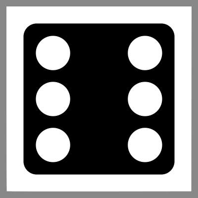

Einleitung
Aera der Zauberey (AdZ) ist ein Fantasy-Rollenspiel, das einen besonderen Schwerpunkt auf flexible und dennoch spielbare Regeln legt. Dies gilt – nomen est omen – insbesondere für den Bereich der Magie. Obwohl in den meisten Spielwelten nur ein kleiner Teil der Bevölkerung Magie wirken kann und auch nicht jedes Abenteuer, das die Charaktere erleben, sich um Magie drehen wird, spielt sie immer eine wichtige Rolle – und sei es nur, weil die Charaktere häufig auf sie zurückgreifen, um die ihnen gestellten Aufgaben zu lösen.
Flexibles Magiesystem
Die in diesem Regelwerk enthaltenen Magieregeln integrieren die enormen, eben übernatürlichen Möglichkeiten, welche die Magie bietet, ins Rollenspiel.
Statt in konkreten Zaubersprüchen werden die magischen Fähigkeiten eines Charakters über Kombinationen von sehr allgemeinen Eigenschaften, z.B. „Tier + beherrschen” oder „Metall + zerstören”, ausgedrückt. Außerdem kann jeder Spieler, dessen Charakter in den relevanten Bereichen der Magie bewandert ist, aus heiterem Himmel eine Idee für einen bestimmten magischen Effekt ins Spiel einbringen. Der Spielleiter gibt dann eine Würfelregelung vor, die nicht nur Auskunft gibt über Erfolg oder Misserfolg des Zauberns, sondern auch über die konkreten Auswirkungen auf die Umwelt (z.B. Höhe, Breite, Dauer, Schnelligkeit etc.).
Die Macht von Zauberkundigen wird dabei zwar von einigen Faktoren begrenzt. Dennoch ist es nicht das Ziel von AdZ, in irgend einer Weise eine Balance zwischen magiekundigen Charakteren und solchen, die keine Magie wirken können, herzustellen. Ein solcher Versuch würde entweder Magiekundige auf wenig plausible Weise einschränken oder andere Charaktere unrealistisch stark machen.
Spielbarkeit
AdZ soll ein schnell spielbares System mit leicht zu merkenden Regeln sein, welche dem Erzählen nicht „im Weg stehen”. Es enthält daher weit weniger Regeln als andere Systeme und geht davon aus, dass der Spielleiter viele Entscheidungen besser mit Einsatz von gesundem Menschenverstand als mit dem Konsultieren eines umfangreichen Katalogs aus genauen Regeln und Tabellen fällen kann.
Dadurch eignet sich AdZ nicht unbedingt für Spieler mit wenig Rollenspielerfahrung oder für Spielleiter, die bisher hauptsächlich vorgefertigte Kaufabenteuer geleitet haben. Es wird insbesondere Rollenspielern ans Herz gelegt, die ein Faible für Magie und erzählerisches Rollenspiel haben und die klassischen Spielsysteme als zu einschränkend empfinden.
Charaktere und ihre Werte
Eigenschaften
Charaktere werden durch die folgenden Typen von Eigenschaften beschrieben. Ein Charakter besitzt in jeder seiner Eigenschaften eine bestimmte Anzahl Punkte bis zum jeweils angegebenen Maximum.
- Attribute und Techniken (bis zu 10 Punkte)
- Fertigkeiten und Magiebereiche (bis zu 10 Punkte)
- Spezialisierungen und Foki (bis zu 5 Punkte)
Bei Proben steht einem Charakter eine bestimmte Anzahl Würfel zur Verfügung, die von den jeweils eingesetzen Eigenschaft(en) abhängt (siehe ).
Attribute
Die grundlegenden Eigenschaften eines Charakters schlagen sich in neun Attributen nieder. Jeder Charakter besitzt in jedem Attribut mindestens einen Punkt.
| Attribut | Abk. | Bedeutung | |
|---|---|---|---|
| Körperkraft | KK | Physische Kraft, Ausdauer | |
| Konstitution | KO | Robustheit, Verminderung von erhaltenem Schaden, geringere Anfälligkeit für Krankheiten | |
| Gewandtheit | GE | Beweglichkeit, Schnelligkeit, Balance, Eleganz der Bewegungen. Wichtig im Nahkampf. | |
| Fingerfertigkeit | FF | Geschickter Einsatz der Hände, feinmotorische Fähigkeiten, Hand-Augen-Koordination | |
| Klugheit | KL | Analytisches Denken, Strukturierungs- und Merkfähigkeit | |
| Willenskraft | WK | Entschlossenheit, Konzentration, Schadensvermeidung beim Zaubern. | |
| Intuition | IN | Feingefühl, Kreativität, Aufmerksamkeit, schnelles Entscheiden, Initiative im Kampf | |
| Charisma | CH | Wirkung auf andere, Ausstrahlung, Präsenz | |
|  | Glück | GL | Glück haben. Kann als Attributsprobe oder für Bonuswürfel eingesetzt werden. |
Fertigkeiten
Fertigkeiten repräsentieren die individuellen Kenntnisse und Fähigkeiten eines Charakters auf dem jeweiligen Gebiet. Die Fertigkeiten in diesem Regelwerk sind so zugeschnitten, dass sie möglichst klar abgegrenzt sind und einen ähnlichen Umfang besitzen. Sofern es die Fertigkeitsliste nicht vorsieht (wie beispielsweise bei Waffenfertigkeiten), sollten daher für die jeweilige Spielwelt oder einzelne Charaktere keine weiteren Fertigkeiten hinzudefiniert werden.Beliebig definierbare Fertigkeiten würden Probleme bei der Vergleichbarkeit von Proben verschiedener Charaktere (insbesondere von Spieler- und Nichtspielercharakteren) mit sich bringen. Stattdessen könnte für eine grob passende Fertigkeit eine entsprechende Spezialisierung notiert werden.
Für Proben werden Fertigkeiten mit einem zur jeweiligen Situation passenden Attribut kombiniert. Zur Orientierung ist bei den meisten Fertigkeiten auch ein Attribut angegeben, mit denen die Fertigkeit häufig kombiniert wird.
Spezialisierungen
Fertigkeiten sind bewusst grob gehalten, um mit einer überschaubaren Anzahl von Spielwerten einen sinnvollen Bereich von Fähigkeiten ausdrücken zu können. Eine wirklich adäquate Ausdifferenzierung ist damit jedoch oft nicht möglich.
Diese Lücke wird durch Spezialisierungen gefüllt. Bei der Charaktererschaffung einigen sich Spieler und Spielleiter auf einen Satz von Spezialisierungen, welche die Fähigkeiten des Charakters präzisieren. Dabei ist jede Spezialisierung einer Fertigkeit zugeordnet. In diesem Regelwerk gibt es keine Liste von möglichen Spezialisierungen; Hinweise dazu liefern jedoch meist die Beschreibungen der jeweiligen Fertigkeiten. Eine Spezialisierung sollte einen deutlich geringeren Umfang als die zugehörige Fertigkeit haben, maximal etwa 30%.
Techniken
Techniken werden für Proben mit Magiebereichen kombiniert. Details zu dieser Mechanik finden sich im Kapitel .

Magiebereiche
Magiebereiche werden für Proben mit Techniken kombiniert. Details zu dieser Mechanik finden sich im Kapitel .
| Bereich | Beschreibung |
|---|---|
| Sinneseindrücke und Illusionen aller Art | |
| Blitze und elektrische Ladungen | |
| Erde, Gestein und ähnliche Stoffe | |
| Feuer, Wärme und Licht | |
| Gedanken, Gefühle und Erinnerungen | |
| Humanoid | Körper von Menschen und anderen Humanoiden |
| Magische Kraft, Zauber und übernatürliche Wesen | |
| Luft und andere normalerweise gasförmige Stoffe | |
| Metalle aller Art | |
| Pflanze | Pflanzliches Leben und Stoffe pflanzlicher Herkunft |
| Tier | Körper von Tieren und Stoffe tierischer Herkunft |
| Wasser und andere normalerweise flüssige Stoffe |
Foki
Die magischen Fähigkeiten eines Charakters lassen sich auch genauer ausdifferenzieren: Ein Spieler kann für jeden Magiebereich eine oder mehrere Techniken wählen, welche der Charakter besonders gut beherrscht. Jede dieser Techniken notiert er als Fokus beim jeweiligen Magiebereich.
Ein Fokus kann immer dann verwendet werden, wenn der jeweilige Magiebereich mit der fokussierten Technik verwendet wird, unabhängig vom konkreten Effekt.Aufgrund dieser Flexibilität sind die Kosten für Foki bei der Charaktererschaffung und beim Steigern auch höher als bei Spezialisierungen.
Ein Charakter könnte den Fokus Tier erschaffen wählen, um sein Pferd besser heilen zu können. Diesen Fokus könnte er aber auch nutzen, wenn er das Gift einer Spinne herstellen will.
Charaktererschaffung
Um einen Charakter zu erstellen, kauft der Spieler die oben genannten Eigenschaften und gegebenenfalls . Zum Abschluss bestimmt er noch verschiedene Kampfwerte.
Eigenschaften
Für die Charaktererschaffung steht dem Spieler eine gewisse Anzahl von Erfahrungspunkten (EP) zur Verfügung, welche die Vorgeschichte und Ausbildung des Charakters symbolisieren.
Der Spielleiter kann für seine Spielrunde die EP-Anzahl frei wählen. Für wenig erfahrene Charaktere bzw. für Spieler, welche zum ersten Mal AdZ spielen, werden 900 EP empfohlen.
Beim Kaufen von Eigenschaften gelten die folgenden Regeln:
- Für jedes Attribut muss mindestens ein Punkt gekauft werden.
- Im Rahmen der Charaktererschaffung können pro Attribut, Fertigkeit, Magiebereich oder Technik höchstens 8 Punkte gekauft werden.
- Für Spezialisierungen und Foki können nur so viele Punkte gekauft werden, wie der Charakter in der jeweiligen Fertigkeit bzw. dem Magiebereich besitzt.
- Die Fertigkeit Muttersprache eines Charakters kostet keine EP.
Die Kosten sind der folgenden Tabelle zu entnehmen. Sollten bei der Erschaffung EP übrig bleiben, können sie später im Spiel zum Steigern verwendet werden. Die Kosten bleiben dieselben.
| Punkte | Erfahrungspunktkosten | ||||
|---|---|---|---|---|---|
| Attribut | Technik | Fertigkeit / Magiebereich | Fokus | Spezialisierung | |
| 1 | 10 | 6 | 4 | 4 | 2 |
| 2 | 15 | 9 | 6 | 6 | 3 |
| 3 | 25 | 15 | 10 | 10 | 5 |
| 4 | 40 | 24 | 16 | 16 | 8 |
| 5 | 60 | 36 | 24 | 24 | 12 |
| 6 | 85 | 51 | 34 | - | - |
| 7 | 115 | 69 | 46 | - | - |
| 8 | 150 | 90 | 60 | - | - |
| 9 | 190 | 114 | 76 | - | - |
| 10 | 235 | 141 | 94 | - | - |
Dabei entsprechen 4 bis 5 Punkte dem Bevölkerungsdurchschnitt bei Attributen bzw. einer soliden Ausbildung in einer Fertigkeit. Darüber hinaus können sich Spieler beim Kauf der Eigenschaften an den folgenden Richtwerten für Würfelanzahlen, also der Summe aus Attribut + Fertigkeit + Spezialisierung bzw. Technik + Magiebereich + Fokus, orientieren (mehr zu Würfelanzahlen unter ):
| Würfel | Bewertung |
|---|---|
| 1 | Lächerlich |
| 4 | Einsteiger |
| 8 | Durchschnittlich |
| 12 | Fortgeschritten |
| 16 | Erfahren |
| 20 | Meisterlich |
| 25 | Fantastisch |
Vor- und Nachteile
Neben Eigenschaften können Spieler für einen Charakter noch die folgenden Vorteile kaufen und Bonus-EP für Nachteile erhalten.
Da die Auswirkungen von Vor- und Nachteilen stark von der verwendeten Welt und dem Inhalt der Kampagne abhängen, sollte der Spielleiter die unten aufgeführten Kosten entsprechend anpassen.
Auch nach der Charaktererschaffung können noch Vorteile zu den gleichen Kosten gekauft werden. Außerdem können zuvor gewählte Nachteile abgebaut werden, in dem die erhaltenen Bonus-EP „zurückgezahlt” werden.
| Bezeichnung | Effekt | EP |
|---|---|---|
| Analphabet | Der Charakter ist aus kulturellen oder psychischen Gründen oder mangels Bildung weder zum Lesen noch zum Schreiben fähig. | +30 |
| Gestenlos zaubern | Der Charakter hat gelernt, ohne Zuhilfenahme von Gesten zu zaubern. | -30 |
| Nahbereichs-Magie | Der Charakter ist unfähig, Zauber auf Ziele in mehr als 20 Meter Entfernung zu wirken. | +45 |
| Wortlos zaubern | Dieser Vorteil ermöglicht es, Magie völlig ohne gemurmelte oder gesprochene Zauberformeln zu wirken. | -30 |
Kampfwerte
Die folgenden im Kampf benötigten Werte werden auf dem Charakterblatt eingetragen. Details zur Bedeutung dieser Werte finden sich unter .
- Initiativebasiswert
- Für den Initiativewurf im Kampf besitzt jeder Charakter einen Initiativebasiswert . Dieser errechnet sich aus dem Attribut Intuition und der Fertigkeit Reflexe: (Intuition + Reflexe) × 2.
- Rüstung
- Trägt der Charakter eine Rüstung, werden die passenden Angaben zu Rüstungsschutz (RS), Widerstandsbonus (WB) und Angriffsmalus (AM) aus der Rüstungstabelle in die jeweiligen Felder übernommen.
- Schild / Parierwaffe
- Falls verwendet, werden für Schilde und/oder Parierwaffen der Verteidigungsmodifikator (VM) und Angriffsmalus (AM) aufsummiert und auf dem Charakterblatt eingetragen. Die Werte finden sich unter .
Des weiteren werden für jede vom Charakter beherrschte Waffengattung oder Kampftechnik jeweils die folgenden Werte notiert. Die benötigten Angaben finden sich in der Waffentabelle oder im Abschnitt im folgenden Format:
| Schadenscode | Verteidigungsmodifikator | |
|---|---|---|
| Speer | 4 + (KK - 5) ≤ 7 | -2 |
- Bezeichnung
- Hier wird der Name der Waffengattung oder der Kampftechnik aufgeführt, oder eine Kombination aus Magiebereich und Technik (z.B. Feuer erschaffen).
- Attribut
- Der Angriffswurf wird mit dem Attribut durchgeführt, welches im Schadenscode verwendet wird. So wird z.B. ein Speer mit Körperkraft geführt.
- Der Schadenscode gibt außerdem an, wie hoch dieses Attribut mindestens sein muss, um die Waffe führen bzw. die Kampftechnik nutzen zu können: dazu muss der geklammerte Ausdruck mindestens 0 ergeben. Die KK-Vorraussetzung beträgt im Beispiel oben also 5.
- Würfel
- In die Spalte „Würfel” wird die Gesamtanzahl der Würfel für Angriffswürfe eingetragen. Bei Waffen und Kampftechniken ist dies die Summe aus dem jeweiligen Attribut und der Waffenfertigkeit, bei magischen Basisangriffen aus Magiebereich, einer Technik und ggf. eines Fokus.
- Mindestwurf (MW)
- Für Waffen und Kampftechniken beträgt der Mindestwurf 1, bei magischen Basisangriffen ist er in der Tabelle angegeben.
- Grundschaden
- Der Grundschaden einer Waffe bzw. Kampftechnik ergibt sich aus dem angegebenen Schadenscode. Der berechnete Wert wird durch den hinter dem kleiner-oder-gleich-Zeichen (≤) angegebenen Wert begrenzt.
- Für einen Charakter mit Körperkraft 8 ergibt sich im Beispiel ein Grundschaden von 7 (4 + 8 - 5). Bei höherer Körperkraft steigt der Grundschaden nicht (aufgrund der Angabe ≤ 7).
- Reichweite
- Hier werden für Fernkampfwaffen die Distanzbereiche notiert, z.B. „5 / 10 / 25 / 50”.
- Schadenscode
- Um bei Steigerungen den Grundschaden leicht anpassen zu können, wird in dieser Spalte der Schadenscode notiert.
- Anmerkungen
- Besitzt die Waffe einen Verteidigungsmodifikator, wird er in dieser Spalte notiert. Bei magischen Basisangriffen kann die Extraschadensregelung notiert werden.
Steigerung von Eigenschaften
Im Laufe seiner Abenteurerkarriere kann ein Charakter seine Fähigkeiten verbessern – er wird z.B. stärker, geschickter oder erfahrener im Umgang mit Magie. Dazu vergibt der Spielleiter für die im Spiel gemachten Erfahrungen regelmäßig weitere Erfahrungspunkte (EP).
Erfahrungspunktkosten
Ein Spieler kann EP verwenden, um einzelne Eigenschaften seines Charakters zu steigern. Die EP-Kosten dafür sind umso höher, je mehr Punkte der Charakter in dieser Eigenschaft bereits besitzt: es kostet z.B. 6 EP, eine Fertigkeit von 3 auf 4 zu steigern.
| Attribut | Technik | Fertigkeit / Magiebereich / Fokus | Spezialisierung | |
|---|---|---|---|---|
| Erster Punkt | 10 | 6 | 4 | 2 |
| Punktzahl um 1 steigern | Bisherige Punkte × 5 | Bisherige Punkte × 3 | Bisherige Punkte × 2 | Bisherige Punkte |
Außerdem kann ein Charakter auch nachträglich die im Kapitel beschriebenen Vorteile kaufen bzw. Nachteile abbauen.
Nach einer Steigerung müssen gegebenenfalls der Initativebasiswert und der Waffengrundschaden für den Charakter neu bestimmt werden (siehe ).
Proben
Alltägliche Handlungen wie Gehen, Essen oder das Wirken eines trivialen Zaubers werden einem Charakter immer gelingen. Wenn es jedoch fraglich ist, ob eine Aktion gelingt, wird der Spielleiter eine Probe auf die Eigenschaften des Charakters verlangen.
Überblick
Eine Probe wird durch das Rollen mehrerer sechsseitiger Würfel (kurz: W6) durchgeführt, wobei die Würfelanzahl von den Eigenschaften des Charakters abhängt. Das Ergebnis des Würfelwurfs wird als Anzahl von Erfolgen angegeben. Damit die Probe gelingt, muss der Spieler eine vom Spielleiter bestimmte Anzahl von Erfolgen, den Mindestwurf, erreichen.
Probenart und Würfelanzahl
Es gibt verschiedene Arten von Proben, die in der unten stehenden Tabelle aufgeführt sind. Die Würfelanzahl ergibt sich je nach Art der Probe aus verschiedenen Eigenschaften, liegt jedoch niemals über 25.Die Begrenzung auf 25 Würfel gilt selbst dann, wenn andere Regeln Bonuswürfel gewähren würden, wie beispielsweise durch Umstandsmodifikatoren, Glück oder beim gemeinsamen Zaubern.
| Bereich | Bezeichnung | Würfelanzahl | Verletzungs- malus |
|---|---|---|---|
| Allgemein | Fertigkeitsprobe | Attribut + Fertigkeit + Spezialisierung | Ja |
| Attributsprobe | Attribut × 2 | Ja | |
| Magie | Zauberprobe | Magiebereich + Technik + Fokus | Ja |
| Entzugswurf | Willenskraft + Bonuswürfel + Zusatzerfolge | Nein | |
| Rettungswurf | Attribut + Bedrohungsbonus | Nein | |
| Kampf | Angriffswurf | Attribut + Fertigkeit + Angriffsmalus der eigenen Rüstung | Ja |
| Widerstandswurf | Konstitution + Widerstandsbonus der eigenen Rüstung | Nein | |
| Verteidigungswurf | Intuition + Verteidigung + Spezialisierung + Verteidigungsmodifikatoren | Ja |
Fertigkeitsproben
Die Würfelanzahl entspricht der Summe der Punktzahlen von Attribut, Fertigkeit und ggf. einer passenden Spezialisierung. Der Spielleiter kann auch einige Bonuswürfel gewähren, wenn der Charakter weitere relevante Fertigkeiten oder Magiebereiche besitzt.
Sollte der Charakter die Fertigkeit nicht besitzen, entspricht die Würfelanzahl der Höhe des Attributs. Alternativ darf der Spieler nach Spielleiterentscheid auch eine verwandte Fertigkeit einsetzen.
Das zu verwendende Attribut wird vom Spielleiter der Situation entsprechend ausgewählt.
- Beruhigen eines Pferds mit Reitkunst + Charisma (statt Gewandtheit)
- Schienen des eigenen gebrochenen Arms mit Medizin + Willenskraft (statt Klugheit)
- Herstellung von Nitroglyzerin mit Chemie + Fingerfertigkeit (statt Klugheit)
Attributsproben
Die Würfelanzahl entspricht der doppelten Punktzahl des Attributs. Gegebenenfalls kommt noch die einfache Punktzahl einer zur Aufgabe passenden Spezialisierung einer beliebigen Fertigkeit hinzu.
Attributsproben werden nur dann eingesetzt, wenn der Spielleiter keine der Fertigkeiten dieses Regelwerks für passend hält, nicht etwa weil der Charakter die passende Fertigkeit nicht besitzt.
Statt einem einzelnen Attribut kann der Spielleiter auch eine Probe auf eine Kombination von zwei Attributen verlangen. Die beiden Punktzahlen werden dann addiert und nicht verdoppelt.
- Sich Erinnern mit Klugheit + Willenskraft
- Selbstbeherrschung mit Konstitution + Willenskraft
- Lernen mit Klugheit + Intuition
- Sturheit mit Willenskraft + Charisma
Zauberproben
Die Würfelanzahl entspricht der Summe der Punktzahlen eines Magiebereichs, einer Technik und ggf. des jeweiligen Fokus. Der Spielleiter kann auch einige Bonuswürfel gewähren, wenn der Charakter weitere relevante Magiebereiche oder Fertigkeiten besitzt.
Statt einem einzelnen Magiebereich bzw. einer einzelnen Technik können auch jeweils mehrere zum Einsatz kommen. In diesem Fall wird der Durchschnitt der jeweiligen Eigenschaften verwendet. Ist der Durchschnitt keine ganze Zahl, wird aufgerundet. In jedem Fall wird nur maximal ein Fokus eingesetzt, der aber nicht in die Durchschnittsberechnungen einfließt.
Umstandsmodifikatoren
Neben den Fähigkeiten eines Charakters gibt es häufig weitere Umstände, welche die Probe beeinflussen. Für negative Einflüsse wie besondere Eile oder widrige Bedingungen (z.B. eisige Kälte) kann der Spielleiter einen Würfelmalus bestimmen. Umgekehrt können positive Einflüsse wie gute Vorbereitung, ausführliches Zielen oder Hilfe von anderen einen Würfelbonus bewirken. Dabei werden alle anwendbaren Würfelmali und -boni auf die zuvor bestimmte Würfelanzahl angerechnet.
Mindestwurf
Als nächstes legt der Spielleiter den zu erreichenden Mindestwurf fest. Er beträgt mindestens 1; seine genaue Höhe hängt von der Schwierigkeit der Aufgabe und den Begleitumständen ab. Für einige Arten von Aufgaben wie das Zaubern sind in diesem Regelwerk Richtlinien für Mindestwürfe aufgeführt; als generelle Orientierung kann die folgende Tabelle verwendet werden:
| Art der Aufgabe | Mindestwurf | Erfolgschance | ||
|---|---|---|---|---|
| 6 Würfel | 12 Würfel | 20 Würfel | ||
| Routine | 2 | 64,9% | 94,6% | 99,7% |
| Herausforderung | 4 | 10,0% | 60,7% | 94,0% |
| Schwierig | 6 | 0,1% | 17,8% | 70,3% |
| Extrem schwierig | 8 | - | 1,9% | 33,9% |
| Fast unmöglich | 10 | - | 0,1% | 9,2% |
Für die Verwendung einer verwandten Fertigkeit statt der passenden erhöht sich der Mindestwurf nach Spielleiterentscheid um mindestens 1 Erfolg, je nach Verwandtschaft der Fertigkeiten bzw. Eignung für die aktuelle Aufgabe.
Die Frage nach dem letzten bekannten Auftauchen des Necronomicons kann mit der Fertigkeit Allgemeinbildung nur sehr schwer beantwortet werden, für Charaktere mit der Fertigkeit Okkultismus jedoch bedeutend einfacher.
Erfolge
Das Ergebnis einer Probe wird als Anzahl von Erfolgen angegeben. Jeder gerollte Würfel, der eine 5 oder 6 zeigt, zählt als ein Erfolg.
Ist der Charakter verwundet oder erschöpft, gilt ein Verletzungsmalus, der auf die Erfolgsanzahl angerechnet wird (siehe ). Ist die Anzahl der verbleibenden Erfolge gleich oder höher als der zuvor festgelegte Mindestwurf, ist die Probe gelungen. Verbleiben weniger oder gar keine Erfolge, ist sie gescheitert.
Die Erfolge, welche über den Mindestwurf hinaus gehen, heißen Zusatzerfolge.
Elris, seines Zeichens zukünftiger Meisterdieb, ist in den frühen Morgenstunden im Haus eines reichen Bürgers bei der Arbeit. Da man sich in Elris' Gewerbe jedoch möglichst lautlos bewegen sollte, verlangt der Spielleiter von Elris eine Heimlichkeits-Probe. Und weil ja ausnahmslos alle Holzdielen die Angewohnheit haben, in den unpassendsten Momenten zu knarren und zu quietschen, ist diese Probe gar nicht so leicht: der Spielleiter sagt einen Mindestwurf von 3 an.
Elris hat Gewandtheit 5, Heimlichkeit 3 und die Spezialisierung Schleichen auf 2, macht 10. Er rollt seine 10 Würfel und erzielt 4 Erfolge. Damit übertrifft er sogar den geforderten Mindestwurf – Elris schafft es also, kaum verräterische Geräusche zu verursachen und selbst sein Atem ist kaum zu hören. Hätte er weniger als 3 Erfolge gehabt, wäre er direkt und lautstark auf eine knarrende Diele getreten.
Es kann vorkommen, dass ein Mindestwurf höher ist als die Würfelanzahl des Charakters und somit niemals genug Erfolge zusammenkommen können. Dies bedeutet schlicht und einfach, dass der Charakter der Aufgabe nicht gewachsen ist.
Es steht dem Spielleiter jedoch frei, auch in einem solchen Fall eine Probe zuzulassen. Erzielt der Charakter dann mit jedem einzelnen seiner Würfel einen Erfolg, hat er die Aufgabe durch pures Glück oder eine unerwartete Wendung der Geschehnisse bewältigen können.
Vergleichende Proben
Jede Handlung, für die ein Charakter eine erfolgreiche Probe abgelegt hat, kann von einem anderen Charakter vereitelt werden. Dazu führt dieser eine eigene Probe durch, die „zweite Probe”.
Diese zweite Probe ist völlig unabhängig von der ersten: es muss nicht derselbe gelten und es muss sich nicht um dieselbe Probenart handeln.
- Erkennen von Lügen: Manipulation vs. Menschenkenntnis
- Angriff und Verteidigung: Schwert vs. Ausweichen
- Kontern von Zaubern: Feuer erschaffen vs. Kraft zerstören
- Armdrücken: Körperkraft vs. Körperkraft
Erzielt die zweite Probe genauso viele oder mehr Erfolge als die erste, ist diese vereitelt. Nach Spielleiterentscheid kann es bei Gleichstand auch ein „Unentschieden” geben.
Der Hausherr, der gerade von einem Ball nach Hause kommt, betritt durch die Hintertür des Hauses die Küche. Für seine Wahrnehmungs-probe setzt der Spielleiter einen Mindestwurf von 4 an, denn die Tür zum Flur ist geschlossen und die Wände nicht besonders hellhörig.
Der Hausherr erzielt mit seinen 8 Würfeln 4 Erfolge und erreicht somit den Mindestwurf. Elris hatte bei seiner Heimlichkeits-Probe ebenfalls 4 Erfolge, er fliegt also auf und muss hastig das weite suchen.
Glückspool
Jeder Charakter besitzt einen Glückspool. Nachdem ein Spieler für eine Probe gewürfelt hat, kann er versuchen, das Ergebnis mit dessen Hilfe zu verbessern: Er erhält dann für diese Probe einmalig nachträgliche Bonuswürfel in Höhe des Glückspools.
Der Glückspool entspricht anfangs dem Wert des Glücksattributs, kann sich jedoch im Lauf des Spiels verändern:
- Ergibt mindestens einer der aus dem Glückspool erhaltenen Bonuswürfel einen Erfolg, sinkt der Glückspool um eins.
- Der Spielleiter entscheidet, wann die Glückspools der Spieler wieder aufgefüllt werden. Typischerweise geschieht dies mehrmals pro Abenteuer, jedoch nicht unbedingt an jedem Spielabend. Der Glückspool steigt dann wieder auf den Anfangswert.
- Wird eine Glücks-Attributsprobe durchgeführt, sinkt der Glückspool nicht.
Bei einer vergleichenden Probe kann der Spieler auch den Gegenwurf abwarten, bevor er sich entscheidet ob er seinen Glückspool einsetzen möchte.
Gesundheit
Der Gesundheitszustand eines Charakters setzt sich zusammen aus:
- Körperlichem Schaden
- Geistigem Schaden
Jeder Schaden, den ein Charakter erhält, ist entweder körperlicher oder geistiger Schaden. In beiden Fällen steht dem Charakter ein Widerstandswurf zu, der seine Zähigkeit und Widerstandsfähigkeit repräsentiert. Die Würfelanzahl entspricht dem Attribut Konstitution. Bei körperlichem Schaden kommt der Widerstandsbonus der getragenen Rüstung, falls vorhanden, hinzu. Für jeden erzielten Erfolg wird der Schaden um 1 reduziert.
Der tatsächlich erhaltene Schaden wird durch Ankreuzen der 12 Stufen der jeweiligen Schadensleiste auf dem Charakterblatt vermerkt. Nach und nach wird dieser Schaden dann abhängig von den Umständen und der im Spiel vergangenen Zeit wieder abgebaut.
 |
|
|
|
|
|
|
|
|
|
|
|
| -0 | -0 | -1 | -1 | -1 | -2 | -2 | -2 | -3 | -3 | -3 | X |
Bei jeder Schadensstufe ist der sogenannte Verletzungsmalus angegeben. Für einen Charakter gilt jeweils der Malus, dessen Stufe zuletzt angekreuzt wurde. Die durch verschiedene Schadensarten verursachten Verletzungsmali sind dabei nicht kumulativ; es gilt nur der jeweils höchste Malus.
Der Verletzungsmalus verringert die Erfolgsanzahl der meisten Proben. Davon ausgenommen sind:
- Widerstandswürfe (siehe oben)
- Rettungswürfe
- Entzugswürfe
In den folgenden Abschnitten werden die Regelmechanismen der beiden Schadensarten vorgestellt.
Körperlicher Schaden
Erleidet ein Charakter Schnitt- oder Stichwunden, Knochenbrüche, Zerrungen, Verbrennungen oder ähnliche Verletzungen, werden dafür Stufen seiner körperlichen Schadensleiste angekreuzt. Auf ähnliche Weise können auch die Auswirkungen von Krankheiten dargestellt werden.
Je mehr Schaden ein Charakter erhalten hat, desto schwächer wird er: die Verletzungen verursachen nicht nur Schmerzen, sondern schränken auch die Bewegungsfähigkeit ein. Dies wird durch den Verletzungsmalus dargestellt.
Wird die letzte körperliche Schadensstufe erreicht, verliert der Charakter das Bewusstsein und ist dem Tod nahe. Werden seine Wunden umgehend versorgt, kann er gerettet werden. Hat der Charakter aber über die letzte Stufe hinaus Schaden erhalten, kann ihn allenfalls der sofortige Einsatz von Heilungsmagie retten.
Im Zuge der natürlichen Heilung werden nach und nach die Schadensstufen wieder abgebaut, beginnend mit der letzten. Pro körperlicher Schadensstufe sind dafür im Normalfall ein bis drei Regenerationsphasen (ausreichender Nachtschlaf) anzusetzen, abhängig von der Art der Verletzungen (z.B. Blutergüsse, leichte/tiefe Schnittwunden oder Quetschungen). Diese Zeit bezieht sich auf das Nachlassen der negativen Auswirkungen von Verletzungen, nicht auf den Abschluss der Heilung aus medizinischer oder kosmetischer Sicht.
Dabei kann die oben angegebene Faustregel nur als grobe Orientierung dienen und ist selbstverständlich für manche Fälle (z.B. Knochenbrüche) völlig ungeeignet. Hier gilt dann stattdessen die Einschätzung des Spielleiters.
Verhält sich der Charakter nicht seinen Verletzungen entsprechend, in dem er z.B. Wunden nicht reinigt und verbindet oder trotz schwerer Verletzungen Gewaltmärsche unternimmt, findet im günstigsten Fall keine Regeneration statt, während im ungünstigsten Fall Komplikationen wie Wundbrand, wieder aufplatzende Wunden oder andere Folgeschäden auftreten.
Geistiger Schaden
Nicht jeder Angriff hat körperlichen Schaden zur Folge. So verursacht eine simple (waffenlose) Prügelei im allgemeinen nur leichte Verletzungen – eben blaue Flecken oder harmlose Abschürfungen. Auch Zauberei kann beim Anwender solchen geistigen Schaden, zum Beispiel in Form von Müdigkeit oder Kopfschmerzen, verursachen. Dieser Schaden wird durch die geistige Schadensleiste dargestellt.
Hat ein Charakter geistigen Schaden erhalten, wird er zunehmend unkonzentrierter und erschöpfter, bis zur völligen Bewusstlosigkeit auf der letzten geistigen Schadensstufe. Darüber hinaus gehender geistiger Schaden wird auf die körperliche Schadensleiste übertragen.
Geistiger Schaden heilt wesentlich schneller als körperlicher Schaden, solange der Charakter keine größeren Anstrengungen wie Kampf oder Zaubern unternimmt. Für jede Schadensstufe dauert dies etwa 30 Minuten.
Kampf
Überblick
In Kampfsituationen bedarf es zusätzlich zum erzählerischen Spiel einer stärkeren Strukturierung, um taktische Entscheidungen darzustellen. Diese Strukturierung wird in den folgenden Abschnitten erläutert.
Die gibt Auskunft darüber, in welcher Reihenfolge die Charaktere handeln. Zur Darstellung des zeitlichen Verlaufs werden Kämpfe in eingeteilt. In den Abschnitten und wird der Ablauf von Angriffen erklärt, bevor die Mechanismen für vorgestellt werden. Die Regeln für den sowie den schließen das Kapitel ab.
Initiative
In jedem Kampf gibt es einige Beteiligte, die einen Tick schneller reagieren und den Überblick über das Kampfgeschehen haben. Um diesen Umstand darzustellen, wird zu Beginn des Kampfes die Initiative ermittelt, um die Reihenfolge der einzelnen Kämpfer festzulegen.Bei längeren Kämpfen sollte der Spielleiter nach nennenswerten Veränderungen der Kampfsituation (z.B. Positionswechsel) die Initiativewürfe wiederholen lassen. Die Initiative ist die Summe aus folgenden Werten:
-
Boni oder Mali je nach Situation, z.B. Malus für überraschte Charaktere
-
Summe der Augenzahlen eines 2W6-Wurfs (dem Initiativewurf )
Haben mehrere Beteiligte die gleiche Initiative, wird ihre Reihenfolge untereinander ausgewürfelt.
Elris hat sich von seiner nächtlichen Flucht über die Dächer ausgeruht. Der nächste Tag beginnt für ihn aber leider noch unerfreulicher, als der letzte endete: am Nachmittag steht er mit seiner Freundin Solinara zwei finster aussehenden und noch dazu feindlich gesinnten Gestalten gegenüber, die wortlos ihre Waffen ziehen.
Elris hat Intuition 5 und Reflexe 6, der Initiativebasiswert beträgt somit 22. Sein Initiativewurf ergibt eine 6, macht 28. Solinara hat Intuition und Reflexe jeweils auf 5 und würfelt eine 7, ergibt 27.
Der erste Gegner besitzt einen Initiativebasiswert von 18 und würfelt eine 4, ergibt 22. Der zweite hat einen Initiativebasiswert von 16 und würfelt eine 10, ergibt 26.
Elris hat also Glück: er ist mit 28 der schnellste. Nach ihm sind Solinara bei 27, Gegner B bei 26 und Gegner A bei 22 an der Reihe.
Runden und Handlungen
Während eines Kampfes werden alle Handlungen in Runden abgewickelt. Eine Runde entspricht dabei etwa sechs Sekunden der gespielten Zeit.
Jede Runde ist in Aktionsphasen eingeteilt, eine für jeden Charakter. Die Reihenfolge der Aktionsphasen entspricht der absteigenden Reihenfolge der Initiative.
Während seiner Aktionsphase kann ein Charakter genau eine reguläre Handlung durchführen, die sogenannte Aktion. Spezielle Regeln erlauben auch weitere freie Aktionen in der Aktionsphase.
Des weiteren kann er beliebig viele Reaktionen während der Aktionsphasen anderer Charaktere durchführen. Diese Reaktionen können sowohl vor als auch nach seiner eigenen Aktionsphase stattfinden, jedoch ausschließlich als Folge auf eine Aktion eines anderen Charakters. So können z.B. Angriffe nicht als Reaktion betrachtet werden.
Die folgende Tabelle enthält Beispiele für Handlungen:
| Handlung | Typ |
|---|---|
| Angriff | Aktion |
| Zauber (offensiv/schützend/verstärkend) | Aktion |
| Nach Sturz wieder aufstehen | Aktion (ohne Probe) |
| Waffe wechseln/ziehen | Aktion (ohne Probe) |
| Gehen | Freie Aktion |
| Ausweichen | Reaktion |
| Parade | Reaktion |
| Zauber (abwehrend) | Reaktion |
Nahkampfangriff
Für Nahkampfangriffe wird zunächst ein Angriffswurf durchgeführt, um zu ermitteln ob und wie gut der Angreifer den Verteidiger trifft. Dieser kann eine Reaktion durchführen, um Erfolge des Angriffswurfs auszugleichen. Der von der Waffe verursachte Schaden wird durch die übrigen Angriffserfolge erhöht und durch die Rüstung des Verteidigers gesenkt. Abschließend wird noch die Widerstandsfähigkeit des Verteidigers mit einem Widerstandswurf berücksichtigt.
- Angriffswurf
-
Für den Angriffswurf wird die Fertigkeit des Waffentyps bzw. der Kampftechnik mit dem Attribut kombiniert, das im Schadenscode aufgeführt ist (siehe ). Die Würfelanzahl wird um den Angriffsmalus der getragenen Ausrüstung verringert (siehe ).
Der Mindestwurf beträgt für einen normalen Angriff 1; für besondere Manöver gilt nach Spielleiterentscheid ein höherer Mindestwurf.Der Verteidigungswurf muss auch in diesem Fall alle Erfolge negieren – besonders schwierige Manöver sind auch schwierig abzuwehren.
- Reaktion
-
Der Verteidiger kann nun eine Reaktion nutzen, um den Angriff abzuwehren.
Für jeden Erfolg bei der Reaktion wird ein Erfolg des Angriffswurfs ausgeglichen. Bleibt kein Angriffserfolg übrig, wurde der Angriff vollständig abgewehrt. Falls mindestens ein Angriffserfolg bestehen bleibt, wurde der Verteidiger getroffen.
- Schadensermittlung
-
Jeder Angriff verursacht eine bestimmte Menge an Grundschaden, die vorab auf dem Charakterblatt notiert wurde (siehe ). Darüber hinaus richtet ein Angriff Bonusschaden in Höhe der übrigen Angriffserfolge an.
Trägt der Verteidiger eine Rüstung, wird der Schaden für jeden Punkt Rüstungsschutz um 1 gesenkt (siehe ).
- Widerstandswurf
-
Schließlich führt der Verteidiger einen Widerstandswurf mit dem Attribut Konstitution durch. Die Würfelanzahl wird gegebenenfalls noch durch den Widerstandsbonus seiner Rüstung erhöht.
Für jeden Erfolg bei diesem Wurf wird der Schaden um 1 reduziert. Ein eventueller Verletzungsmalus wird nicht angewendet.
- Auswirkungen
-
Der übrige Schaden wird auf dem Charakterblatt vermerkt und führt fortan zu einem Verletzungsmalus (siehe ).
Während seiner Aktionsphase greift Elris Gegner B mit 9 Würfeln (Körperkraft 5, Schwerter 4) an und erzielt 3 Erfolge.
Elris’ Gegner versucht jetzt mit 9 Würfeln (Gewandtheit 4 + Verteidigung 3 + Parade 2) zu parieren. Er erzielt 2 Erfolge und kann damit den Angriff zwar nicht vollständig abwehren, aber zumindest zu weniger verletzlichen Körperstellen ablenken. Seine Parade-Erfolge werden von Elris’ Angriffserfolgen abgezogen, übrig bleibt 1 Erfolg.
Ein Schwert hat den Schadenscode 3 + (KK - 4), für Elris beträgt der Grundschaden also 4. Der verbleibende Angriffserfolg erhöht diesen Schaden um 1 auf 5.
Gegner B (Konstitution 3) trägt einfache Straßenkleidung. Bei seinem Widerstandswurf erzielt er mit seinen 3 Würfeln 1 Erfolg. Es bleiben also noch 4 Schadenspunkte übrig, die auf seiner Schadensleiste eingetragen werden. Er erhält von nun an einen Verletzungsmalus von 1 Erfolg.
Reaktion
Charaktere können jede Aktion eines anderen Charakters mit einer der unten stehenden Reaktionen beantworten. Je mehr Reaktionen ein Charakter jedoch in derselben Runde durchführt, desto schwieriger wird es für ihn.
Reaktionsmalus
Führt ein Charakter eine Reaktion durch, wird von der Würfelanzahl dessen aktueller Reaktionsmalus abgezogen. Es verbleibt jedoch immer mindestens ein Würfel.
Der Reaktionsmalus verändert sich im Verlauf des Kampfes wie folgt:
- Zu Beginn des Kampfes: 0
- Bei jeder Aktionsphase des Charakters: 0
- Nach jeder Reaktion: Malus steigt um die Erfolgsanzahl der Reaktion oder der zugehörigen Aktion, je nachdem, welche niedriger ist.
Beim oben beschriebenen Angriff erzielte Elris 3 Erfolge. Gegner B reagierte mit einer Parade und erzielte 2 Erfolge. Sein Reaktionsmalus beträgt nun 2.
Sobald Gegner B seine Aktionsphase erreicht, sinkt der Malus wieder auf 0, doch zuvor könnte ihn Solinara angreifen. Falls er dann eine Reaktion durchführt, wird auf die Würfelanzahl sein Reaktionsmalus angerechnet. Für eine Parade dürfte er also nur noch 7 von 9 Würfeln einsetzen. Außerdem verringert sein Verletzungsmalus die dabei erzielte Erfolgsanzahl um 1.
Reaktionsarten
- Verteidigungswurf
-
Der Verteidigungswurf wird mit dem Attribut Intuition und der Fertigkeit Verteidigung durchgeführt. Dabei können die Spezialisierungen Ausweichen, Parade oder Schildblock eingesetzt werden. Auf die Würfelanzahl werden die Verteidigungsmodifikatoren der vom Verteidiger geführten Waffen, Parierwaffen und Schilde angerechnet (siehe ).
- Gegenzauber
-
Zauberkundige können als Reaktion beliebige Zauber verwenden, welche geeignet sind die Aktion zu vereiteln. Neben Antimagie kann dazu auch „gleiches mit gleichem” (z.B. bei Telekinese) oder ein gegensätzlicher Effekt (z.B. einem Hitzeangriff die Hitze entziehen) zählen.
Die Reaktion wird dabei wie jeder andere Zauber abgewickelt (siehe ).
- Rettungswurf
-
Charaktere können magischen Angriffen einen Rettungswurf entgegensetzen.
Rüstungen, Parierwaffen und Schilde
Um sich zu schützen, tragen Charaktere oft Rüstungen oder kämpfen neben der Hauptwaffe noch mit einer Parierwaffe oder einem Schild . Diese Ausrüstungsgegenstände werden durch die folgenden Werte charakterisiert:
- Rüstungsschutz (RS)
-
Der Rüstungsschutz verringert die Anzahl der Schadenspunkte, welche der Träger erhält, bevor der Widerstandswurf durchgeführt wird.
- Verteidigungsmodifikator (VM)
-
Besonders schwere und sperrige Waffen ermöglichen zwar machtvolle Angriffe, behindern aber auch die Verteidigung. Schilde und die beim Fechten verwendeten Parierwaffen wiederum bieten einen Vorteil für die Defensive.
In beiden Fällen gibt der Verteidigungsmodifikator an, wie die Würfelanzahl des eigenen Verteidigungswurfs modifiziert wird. Gibt es mehrere Modifikatoren, werden sie miteinander verrechnet.
- Widerstandsbonus (WB)
-
Manche Rüstungen gewähren dem Träger Bonuswürfel für den Widerstandswurf (siehe oben).
- Angriffsmalus (AM)
-
Das Gewicht von Rüstungen und das Hantieren mit Schilden schränken die Fähigkeit zum Angriff ein. Dies wird durch den Angriffsmalus dargestellt, der den Würfelabzug beim Angriffswurf angibt. Mehrere Mali wirken kumulativ.
Eine Liste von Rüstungen, Parierwaffen und Schilden findet sich unter .
Beidhändiger Kampf
Die Fertigkeit Beidhändiger Kampf erlaubt es dem Charakter, gleichzeitig mit zwei Waffen zu kämpfen. Dies gewährt dem Charakter zwar keine zusätzlichen Aktionen, erhöht aber die Erfolgschance: bei jedem Angriffs- und Verteidigungswurf wird ein zusätzlicher Wurf durchgeführt und das bessere Ergebnis gewertet. Bei diesem Wurf werden jedoch aus der jeweiligen Waffenfertigkeit bzw. der Fertigkeit Verteidigung nur Würfel in Höhe der Fertigkeit Beidhändiger Kampf verwendet. Würfel aus dem Attribut und einer eventuellen Spezialisierung sind nicht beschränkt.
Ein solcher Zusatzwurf ist nur dann zulässig, wenn zwei Waffen desselben Typs verwendet werden. Außerdem muss die jeweilige Aktion auch mit den beiden Waffen durchgeführt werden, es darf sich also insbesondere nicht um Ausweichen oder den Einsatz eines Schildes handeln. Auch das Verwenden einer Parierwaffe zählt nicht als beidhändiger Kampf.
Fernkampf
Grundsätzlich werden Fernkampfwaffen im Spiel genauso gehandhabt wie Nahkampfwaffen: Beim Angriffswurf entspricht die Würfelanzahl der Summe aus Fingerfertigkeit, der entsprechenden Waffenfertigkeit und ggf. einer Spezialisierung. Der Mindestwurf von 1 wird jedoch noch je nach Distanz und Größe des Ziels modifiziert. Dabei werden die unten stehenden Modifikatoren für Distanzbereich und Größe miteinander verrechnet, der Mindestwurf beträgt jedoch immer mindestens 1.
|
|
In welchen Distanzbereich ein Ziel fällt, ergibt sich aus den Reichweitenangaben in der Fernkampf-Waffentabelle. Die Werte geben für die vier Bereiche die jeweilige maximale Distanz in Metern an.Die Reichweitenangaben beziehen sich auf das Treffen eines Ziels; die maximale Flugweite einer Waffe liegt deutlich höher.
Ein Schütze möchte mit einem Kriegsbogen (25 / 50 / 100 / 250) einen Gegner treffen, der etwa 60 Meter entfernt ist. Diese Entfernung entspricht der mittleren Distanz, der Mindestwurf steigt daher um 2 auf 3. Bei seinem Gegner handelt es sich um einen Menschen, der damit in die mittlere Größenklasse fällt – ergibt +0. Seinen Angriffswurf führt der Schütze also gegen einen Mindestwurf von 3 aus.
Magie
Zauberer verwenden magische Energie aus ihrer unmittelbaren Umgebung, die wir schlicht als Kraft bezeichnen, um den gewünschten Effekt hervorzurufen. Dabei kommen weder feste Zaubersprüche zum Einsatz, noch gibt es einen begrenzten Kraftvorrat.
Das folgende Kapitel erläutert die Regelmechanik des Zauberns; Details zu den „Naturgesetzen” der Magie finden sich hingegen im Anhang .
Festlegen der Zauberparameter
Möchte ein Spieler einen magischen Effekt hervorrufen, wird zunächst geprüft ob der Effekt überhaupt möglich ist und wenn ja, wie er regeltechnisch gehandhabt wird. Dabei helfen die Angaben aus dem Anhang : die dort gelisteten exemplarischen Effekte sowie weitere Angaben bilden ein Baukastensystem, mit dessen Hilfe auch völlig neue Effekte eingeordnet werden können. Dazu werden nacheinander die unten stehenden Parameter festgelegt.
- Magiebereich und Technik
-
Basierend auf einer kurzen Beschreibung, wie der Zauber funktioniert, werden der benötigte Magiebereich und die Technik festgelegt: Der Magiebereich gibt die Kategorie des Ziels vor, während die Technik bestimmt, auf welche Weise das Ziel beeinflusst wird. Lässt sich ein Effekt nicht eindeutig genau einer Technik und einem Magiebereich zuordnen, können auch jeweils mehrere verwendet werden (siehe ).
Soll eine Person an Ort und Stelle gehalten werden, sind die verschiedensten Ansätze denkbar:
- das Hervorrufen einer Lähmung (Humanoid beherrschen),
- das Errichten einer unsichtbaren Barriere (Luft modifizieren) oder
- das Fesseln mit einem herbeigezauberten Seil (Pflanze erschaffen & beherrschen).
- Mindestwurf
-
Der Mindestwurf der Zauberprobe hängt von der Komplexität des Effekts ab. So ist z.B. eine magische Fackel simpler als eine Leuchtschrift oder das Lesen von Gedanken einfacher als das von Erinnerungen.
Der Abschnitt „Mindestwurf” des jeweiligen Magiebereichs gibt an, welche Faktoren die Komplexität beeinflussen, und listet Beispieleffekte mit ihren Mindestwürfen auf.
Ist ein Effekt in der Tabelle mit einer Mengenangabe versehen, gelten für andere Werte entsprechend höhere/niedrigere Mindestwürfe nach Spielleiterentscheid. Typischerweise ist diese Anpassung jedoch nicht linear: eine Angabe „1” auf „2” zu ändern verdoppelt nicht den Mindestwurf.
- Krafteinsatz
-
Die Menge an Kraftpunkten (KP), die für einen Zauber verwendet wird, beeinflusst je nach Effekt unterschiedliche Aspekte, z.B. Stärke, Schaden, Fläche, Reichweite oder Wirkungsdauer.
Im Abschnitt „Krafteinsatz” sind Beispiele für die Kraftpunkt-Kosten verschiedener Effekte aufgeführt. Bei Effekten mit einer begrenzten Wirkungsdauer geschieht dies im Format „1 KP pro <Zeitperiode>”, ansonsten mit festen Angaben.
Wenn ein Effekt nur einmal in der Tabelle aufgeführt ist, verwendet er eine lineare Skala und kann beliebig skaliert werden. Aus der Tabellen-Angabe „1 KP = einen Sinn eine Minute beeinflussen” ergibt sich zum Beispiel „2 KP = zwei Sinne eine Minute beeinflussen” aber auch „1 KP = zwei Sinne 30 Sekunden beeinflussen”.
Effekte mit einer nicht linearen Skala sind dagegen mehrfach mit verschiedenen Werten gelistet, so dass der Spielleiter andere Werte entsprechend einordnen kann.
Bei einigen Magiebereichen sind statt einer Tabelle mit Beispielkosten genauere Regeln für die Ermittlung des Krafteinsatzes angegeben. Solche Angaben können linear sein, z.B. „für jeden weiteren KP erhöht sich der Radius um 5 m” oder die folgende Standardskala verwenden:
1 2 5 10 25 50 100 250 500 1.000 2.500 5.000 … - Zauberdauer
-
Die Zauberdauer beträgt unabhängig von anderen Parametern eine Minute.
Im Kampf oder anderen hektischen Situationen kann die Zauberdauer auf eine einzige Handlung verkürzt werden. In diesem Fall steigt der Mindestwurf um 1.
Für besonders kraftaufwändige Effekte werden Zauber als ausgedehnte durchgeführt.
Solinara sieht, wie ein Bogenschütze auf sie schießt. Sie zaubert als Reaktion Pflanze beherrschen, um den Pfeil abzulenken, und muss dazu die Zauberdauer auf eine Handlung verkürzen.
Tharion will im Dunkeln sehen können. Der Spieler erklärt, dass Tharion seine Augen so verzaubert, dass sie zur Restlichtverstärkung fähig sind. Er wählt die Eigenschaften Humanoid modifizieren. Der Spielleiter legt anhand der Magierichtlinien einen Mindestwurf von 2 („einen Sinn schärfen”) und einen Krafteinsatz von 1 pro 10 Minuten fest. Tharion hat es nicht besonders eilig, die Zauberdauer beträgt daher eine Minute.
Wirken von Zaubern
Überblick
Zunächst bestimmt der Spieler den gewünschten .
Als nächstes entscheidet die , ob der Zauber an sich gelungen ist und wenn ja, wie gut. Dann konzentriert sich der Zaubernde während der auf den Zauber.
Das Lenken von Kraft stellt für den Zaubernden eine große mentale Anstrengung dar, deren negative Auswirkungen am Ende der Zauberdauer eintreten. Sie können aber durch den verringert oder vermieden werden.
Schließlich können andere Charaktere auf den Zauber reagieren.
Die folgenden Abschnitte beschreiben den genauen Ablauf des Zauberns.
Krafteinsatz
Bevor die Zauberprobe durchgeführt wird, muss der Spieler ansagen, wieviel Kraft der Charakter für den Zauber verwenden will. Gibt es mehrere Möglichkeiten, Kraftpunkte einzusetzen, kann jeder KP nur für jeweils einen dieser Aspekte ausgegeben werden.
Zuviel Kraft lässt den Zaubernden jedoch ermüden oder schädigt ihn sogar (siehe ).
Für Tharions Nachtsicht-Zauber wählt der Spieler einen Krafteinsatz von 2 KP, was 20 Minuten Wirkungsdauer entspricht.
Zauberprobe
Die Zauberprobe wird wie unter beschrieben durchgeführt. Dabei kann der Charakter auf einen oder mehrere Magiebereichswürfel verzichten, um sie stattdessen als Bonuswürfel beim einzusetzen.
Tharion ist in diesem Bereich nicht besonders erfahren: er hat Humanoid 3 und Modifizieren 1, also 4 Würfel für die Zauberprobe zur Verfügung. Er könnte davon bis zu 3 Würfel für den Entzugswurf aufheben, möchte aber nicht riskieren, dass der Zauber scheitert.
Er führt die Zauberprobe daher mit allen 4 Würfeln aus und erzielt 2 Erfolge, also genau den benötigten Mindestwurf.
Zauberdauer
Während der Zauberdauer muss sich der Zaubernde durchgehend auf das Zaubern konzentrieren und alle seine Aktionen für den Zaubervorgang verwenden. Reaktionen wie Ausweichen und Rettungswürfe bleiben zwar möglich, es können jedoch keine Zauber gewirkt werden.
Die Zauberdauer endet vorzeitig in folgenden Fällen:
- Gescheiterte Probe
- Ist die Zauberprobe gescheitert, endet die Zauberdauer nach der (aufgerundeten) Hälfte der Zeit; erst dann bemerkt der Zaubernde das Scheitern.
- Schaden
- Erhält der Zaubernde während der Zauberdauer Schadensstufen, z.B. durch einen Angriff, ist sein Zauber sofort gescheitert und die Zauberdauer endet.
- Abbruch
- Der Zaubernde kann den Zaubervorgang während der Zauberdauer jederzeit freiwillig abbrechen, wodurch diese sofort endet.
In all diesen Fällen muss jedoch der reguläre Entzugswurf durchgeführt werden.
Entzugswurf
Für einen Zauber zieht ein Charakter Kraft aus der Umgebung zusammen und presst sie in die Zaubermatrix. Dieser Prozess ist eine enorme geistige Anstrengung, die umso größer ist, je mehr Kraft verwendet wird. Ihre Auswirkungen reichen von Unkonzentriertheit und Erschöpfung über Kopfschmerzen und Halluzinationen bis hin zu Schockzuständen und Bewusstlosigkeit.
Unabhängig vom Ergebnis der Zauberprobe legt der Charakter am Ende der Zauberdauer einen Entzugswurf ab, um zu ermitteln wieviel Schaden er durch diesen Zauber erhält. Die Würfelanzahl ist die Summe der folgenden Werte:
- Attribut Willenskraft
- Anzahl der vor der Zauberprobe festgelegten Bonuswürfel
- Anzahl der Zusatzerfolge bei der Zauberprobe
Der erhaltene geistige Schaden entspricht der Anzahl der verwendeten Kraftpunkte, vermindert um die beim Entzugswurf erzielten Erfolge. Ein eventueller Verletzungsmalus wird nicht angewendet.
Tharion hat für seinen Nachtsicht-Zauber 2 Kraftpunkte verwendet. Weil er keine Bonuswürfel aus der Zauberprobe erhält und den Mindestwurf nicht übertroffen hat, stehen ihm für den Entzugswurf nur Würfel in Höhe seines Willenskraft-Attributs zur Verfügung, nämlich 5. Bei der Probe hat er Pech und erzielt nur 1 Erfolg, erhält also 1 geistigen Schadenspunkt.
Reaktion
Andere Zauberkundige können eine Reaktion nutzen, um den Zauber mit Antimagie oder anderen geeigneten Gegenzaubern abzuwehren. Bei magischen Angriffen stehen deren Zielen außerdem Rettungswürfe zu (siehe unten). In beiden Fällen handelt es sich um eine vergleichende Probe.
Gewinnt die Reaktion den Vergleich, ist der Zauber je nach Art der Reaktion insgesamt gescheitert oder verfehlt das jeweilige Ziel.
Reagieren mehrere Charaktere auf den gleichen Zauber, wird jede Reaktion für sich betrachtet. Versuchen also z.B. mehrere Charaktere denselben Zauber zu kontern, werden ihre Erfolge nicht addiert.
Rettungswurf
Charaktere, die das Ziel eines Zaubers sind, können als einen Rettungswurf durchführen, um den Zauber abzuwehren. Dies gilt auch, wenn das Ziel des Zaubers nicht Körper oder Geist eines Charakters, sondern die an seinem Körper getragenen Gegenstände sind.
Der Rettungswurf kann je nach Situation mit einem der folgenden Attribute durchgeführt werden:
- Körperkraft
- Gegenstände festhalten
- Konstitution
- Widerstand gegen Bewegung, Teleportation oder körperliche Veränderungen
- Intuition
- Einem Angriff ausweichen
- Willenskraft
- Beeinflussungen des Geistes oder sonstige Zauber abwehren
Der Charakter erhält so viele Würfel, wie er Punkte im jeweiligen Attribut hat.Es handelt sich hierbei ausdrücklich nicht um eine Attributsprobe, bei der die Würfelanzahl dem doppelten Punktwert entspräche. Des weiteren erhält er je nach Art des Zaubers und Grad der Bedrohung einen Bonus von bis zu 10 Würfeln. Ein eventueller Verletzungsmalus wird nicht angewendet.
Hat der Rettungswurf mindestens so viele Erfolge wie der Zauber, bleibt dieser wirkungslos.
Zauberkontrolle
Bei nicht-permanenten Zaubern beginnt nach der Zauberdauer die Wirkungsdauer. Während dieser Zeit übt der Zaubernde die Zauberkontrolle aus; für ihn gelten die folgenden Regeln.
Konzentration
Viele Zauber erhalten sich selbstständig, in dem sie sich aus der enthaltenen Kraft speisen. Manche Zauber erfordern hingegen ständige Konzentration des Zaubernden und damit seine Anwesenheit auch nach dem eigentlichen Zaubervorgang. Für jeden Zauber, den ein Charakter auf diese Weise aufrecht erhält, erhält er einen Würfelabzug von 1 auf alle Handlungen. Kann oder will er sich nicht mehr konzentrieren, endet die Wirkung des Zaubers sofort.
Pausieren und Fortsetzen
Der Zaubernde kann den Zauber pausieren, in dem er eine Aktion aufwendet; eine Probe ist nicht nötig. Durch das Pausieren wird die Wirkung des Zaubers ausgesetzt, die Wirkungsdauer verstreicht jedoch weiterhin. Ein pausierter Zauber ist mithilfe von Erkennen weiterhin wahrnehm- und mit Antimagie beeinflussbar.
Der pausierte Zauber kann fortgesetzt werden, in dem der Zaubernde eine Aktion aufwendet und erneut die Zauberprobe ablegt. Dabei muss er alle Voraussetzungen erfüllen, die auch beim Zaubern gelten, also z.B. eine Sichtlinie zum Ziel besitzen. Scheitert diese Probe, endet die Wirkungsdauer sofort und endgültig.
Wirkungsdauer verlängern
Zum Ablauf der Wirkungsdauer kann der Zaubernde die Zaubermatrix mit neuer Kraft versorgen, in dem er erneut einen Entzugswurf ablegt. Die Kraftmenge ist dabei identisch zu der ursprünglich eingesetzten Anzahl KP. Zauberparameter wie Ziele, Entfernung oder der genaue Effekt können jedoch nicht verändert werden.
Unabhängig vom Ergebnis des Entzugswurfs beginnt danach die Wirkungsdauer erneut, frühestens jedoch direkt im Anschluss an die vorherige Wirkungsdauer.
Dieser Vorgang kann beliebig oft wiederholt werden, solange zwischen dem Ende der vorherigen und dem Beginn der neuen Wirkungsdauer keine Runden vergangen sind.
Rituale
Lassen sich Zaubernde besonders viel Zeit, entsteht eine machtvollere Zaubermatrix. Abhängig von der Zauberdauer erhält sie zusätzliche Kraftpunkte, gegen die kein Entzugswurf nötig ist:
| Ritualdauer | Kraft |
|---|---|
| 1 Stunde | 5 KP |
| 8 Stunden | 10 KP |
| 24 Stunden | 15 KP |
| 80 Stunden | 20 KP |
| 240 Stunden | 25 KP |
Auf diese Weise können nicht mehr als 25 zusätzliche KP erzeugt werden. Hinzu kommt noch der reguläre Krafteinsatz des Zaubernden, gegen den wie üblich ein Entzugswurf stattfindet.
Erreicht der Zaubernde den Mindestwurf nicht, muss er seinen Entzugswurf für die Summe der von ihm eingesetzten und der o.g. zusätzlichen Kraftpunkte durchführen.
Mit der Technik ist es möglich, dass mehrere Magiekundige zusammen an einem Ritual arbeiten. In diesem Fall ergibt sich die tatsächliche Zeit aus der oben genannten Ritualdauer geteilt durch die Anzahl der erfolgreichen Mitwirkenden, beträgt jedoch immer mindestens eine Stunde.
Ein Ritual mit 10 zusätzlichen KP, für das ein einzelner Magier 8 Stunden lang zaubern müsste, dauert in einem Zirkel aus 4 Magiern nur 2 Stunden.